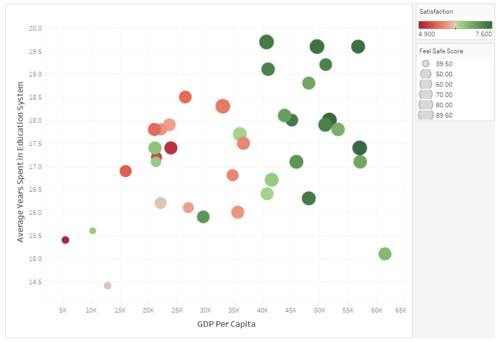

Real-world data often involves complex relationships between multiple variables. Advanced visualization techniques help us explore and communicate these multi-dimensional relationships.
Techniques for visualizing multi-variable relationships include:
Adding Dimensions with Visual Encodings
Color: Encoding categorical or numerical variables with color
Size: Encoding numerical variables with point or line size
Shape: Encoding categorical variables with different point shapes
Transparency: Using opacity to handle overplotting or indicate certainty
Small Multiples
Creating a series of similar charts for different categories or time periods, allowing for comparison across a third variable.
Faceting
Splitting a single visualization into multiple panels based on categories, creating a grid of related charts.
Layering
Overlaying multiple series or variables on the same visualization, using different colors or styles to distinguish them.
Interactive Techniques
Brushing and linking: Selections in one visualization highlight corresponding points in others
Filtering: Dynamically including or excluding data based on selection
Details on demand: Showing additional information when hovering over or selecting elements
employs several advanced visualization techniques to display four dimensions of data simultaneously. The x-axis plots GDP Per Capita while the y-axis shows Average Years Spent in Education, creating a spatial distribution of countries or regions. The color spectrum from red (low, 4.900) to green (high, 7.600) encodes Satisfaction levels, allowing viewers to quickly identify that higher GDP areas generally report higher satisfaction. Meanwhile, the size of each circle represents Feel Safe Scores, with larger bubbles indicating greater perceived safety (up to 89.60). This multidimensional approach creates visual patterns that reveal complex relationships between wealth, education, satisfaction, and safety that might be missed in simpler visualizations. The design leverages pre-attentive visual processing through position, color, and size to communicate relationships efficiently without overwhelming the viewer.

Figure96.Multi-Variable Visualization Techniques
Example97.Multi-Variable Community Health Visualizations.
For our Community Health dataset, advanced multi-variable visualizations might include:
A scatter plot showing the relationship between green space access and asthma rates, with points colored by income level and sized by population density
Small multiples displaying the air quality-health relationship separately for each region of the city
A layered line chart showing trends in multiple health metrics over time, highlighting their relative changes
An interactive dashboard with linked visualizations where selecting high-pollution areas highlights corresponding neighborhoods in health outcome charts
A composite environmental quality score visualized as color on a map, with the ability to filter by different health outcome ranges
When creating multi-variable visualizations, be careful to:
Avoid overwhelming viewers with too much information at once
Ensure that each additional variable adds meaningful insight
Use visual encodings that are easy to distinguish and interpret
Provide clear legends and explanations for all encodings
Which technique would be MOST appropriate for examining how the relationship between income and health outcomes varies across different regions of a city?
A pie chart showing the proportion of total health issues by region
A pie chart would only show the distribution of a single variable across regions, not the relationship between income and health outcomes.
A 3D scatter plot with x=income, y=health, z=region
Since region is a categorical variable, a 3D scatter plot with region as the z-axis would not be appropriate and would likely be difficult to interpret.
Small multiples showing income-health scatter plots separately for each region
Correct! Small multiples would create a separate scatter plot for each region, allowing direct comparison of how the income-health relationship varies across regions while maintaining the ability to see the full relationship within each region.
A stacked bar chart of health outcomes for each income bracket
A stacked bar chart would show composition but would make it difficult to clearly see the relationship between income and health outcomes across different regions.
In this activity, you’ll create advanced visualizations that incorporate multiple variables from your dataset.
(a)
Create a scatter plot in CODAP that shows the relationship between two numerical variables in your dataset. Then enhance it by:
Adding color to represent a categorical variable
Using point size to represent a third numerical variable
Adding reference lines or other annotations to highlight patterns
(b)
Create small multiples for your data by:
Identifying a key categorical variable in your dataset
Creating separate but identical visualizations for each category
Arranging them in a grid for easy comparison
(c)
Explore the interactive capabilities of CODAP by:
Creating multiple linked visualizations of your data
Testing how selections in one visualization highlight corresponding points in others
Using this interactivity to identify patterns or relationships that weren’t apparent in single visualizations
SubsectionStatistical Thinking: Correlation and Relationships
As we create more complex visualizations, it’s important to develop statistical thinking about the relationships we observe. Understanding correlation and other statistical relationships helps us interpret our visualizations more accurately.
Definition99.
Correlation is a statistical measure that expresses the extent to which two variables are linearly related. The correlation coefficient (r) ranges from -1 to +1, with values closer to +/-1 indicating stronger relationships and 0 indicating no linear relationship.
Key concepts in understanding relationships:
Correlation vs. Causation
Correlation indicates that two variables change together but does not necessarily imply that one causes the other. Causal relationships require additional evidence beyond correlation.
Types of Relationships
Linear: Variables change at a constant rate relative to each other
Non-linear: The relationship follows a curve or more complex pattern
Monotonic: Variables change in the same direction but not necessarily at a constant rate
No relationship: Changes in one variable are not associated with changes in the other
Strength of Relationships
Strong: Points closely follow a pattern with little scatter
Moderate: Points generally follow a pattern but with noticeable scatter
Weak: Points loosely follow a pattern with substantial scatter
Direction of Relationships
Positive: Variables increase or decrease together
Negative: As one variable increases, the other decreases
Confounding Variables
Variables not included in the analysis that affect both variables being studied, potentially creating or masking relationships.
Simpson’s Paradox
A phenomenon where a trend appears in several different groups of data but disappears or reverses when these groups are combined.
Example101.Relationships in Community Health Data.
In our Community Health dataset, we might observe various relationships:
A negative correlation between green space access and asthma rates, suggesting that neighborhoods with more green space tend to have lower asthma prevalence
A non-linear relationship between air pollution and distance from major highways, with pollution decreasing rapidly at first but then leveling off
No apparent relationship between neighborhood age and obesity rates, suggesting these variables aren’t directly connected
A relationship between income and health outcomes that appears strong overall but weakens when examining specific regions separately (a potential Simpson’s Paradox)
A correlation between air quality and asthma that might be confounded by income, as lower-income areas often have both worse air quality and less access to healthcare
When interpreting relationships in visualizations:
Look for patterns but be cautious about inferring causation
Consider potential confounding variables
Examine relationships within subgroups, not just overall
Be aware that correlation measures only capture linear relationships
Consider whether outliers are affecting the apparent relationship
Look for contextual factors that might explain observed relationships
Checkpoint102.Interpreting Correlations.
A data scientist finds a strong positive correlation (r = 0.85) between ice cream sales and drowning incidents in a coastal city. Which of the following is the MOST appropriate interpretation?
Eating ice cream causes people to drown.
This incorrectly assumes causation from correlation. There’s no logical mechanism by which ice cream consumption would directly cause drowning.
The correlation must be coincidental since these variables are unrelated.
This dismisses the strong correlation without considering possible explanations. A high correlation coefficient (0.85) suggests a relationship, even if indirect.
A third factor, such as hot weather or summer season, likely influences both variables.
Correct! This recognizes the correlation while identifying a plausible confounding variable. Hot weather/summer likely increases both ice cream consumption and swimming activity (which increases drowning risk), creating an indirect relationship between the variables.
Drowning incidents cause increased ice cream sales.
This incorrectly assumes causation in the reverse direction, which is even less plausible than ice cream causing drowning.
Activity30.Exploring Relationships in Your Dataset.
In this activity, you’ll explore and analyze relationships between variables in your dataset.
(a)
Create scatter plots for at least three different pairs of numerical variables in your dataset. For each pair:
Describe the pattern you observe (linear, non-linear, no relationship)
Estimate the strength (strong, moderate, weak) and direction (positive, negative) of any relationship
Calculate the correlation coefficient using CODAP’s calculator
(b)
Select the strongest relationship you found and explore it further by:
Creating separate scatter plots for different subgroups (using a categorical variable)
Comparing the relationship across these subgroups
Looking for evidence of Simpson’s Paradox or other subgroup differences
(c)
For the relationship you’ve been exploring:
Identify potential confounding variables that might influence both variables
Discuss whether the relationship might indicate causation or just correlation
Consider how you would communicate this relationship, including appropriate caveats, in your final presentation